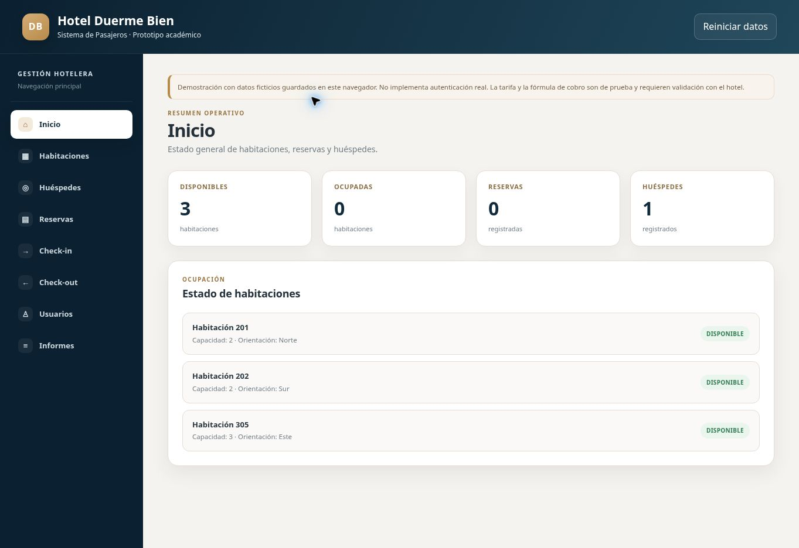

Sistema de Pasajeros - Hotel Duerme Bien
Tema 6 · Luis Huenchul
Casos de uso

PDF · Editar en diagrams.net
Flujo de check-in

PDF · Editar en diagrams.net
Flujo de check-out

PDF · Editar en diagrams.net
Flujo de reserva

PDF · Editar en diagrams.net
Diagrama de clases

PDF · Editar en diagrams.net
Modelo de base de datos

PDF · Editar en diagrams.net
Wireframes y mockups
Ver pantallas · Editar en diagrams.net · Editar HTML
Prototipo funcional

Abrir prototipo · Editar código
Kanban
Ver tablero · Editar